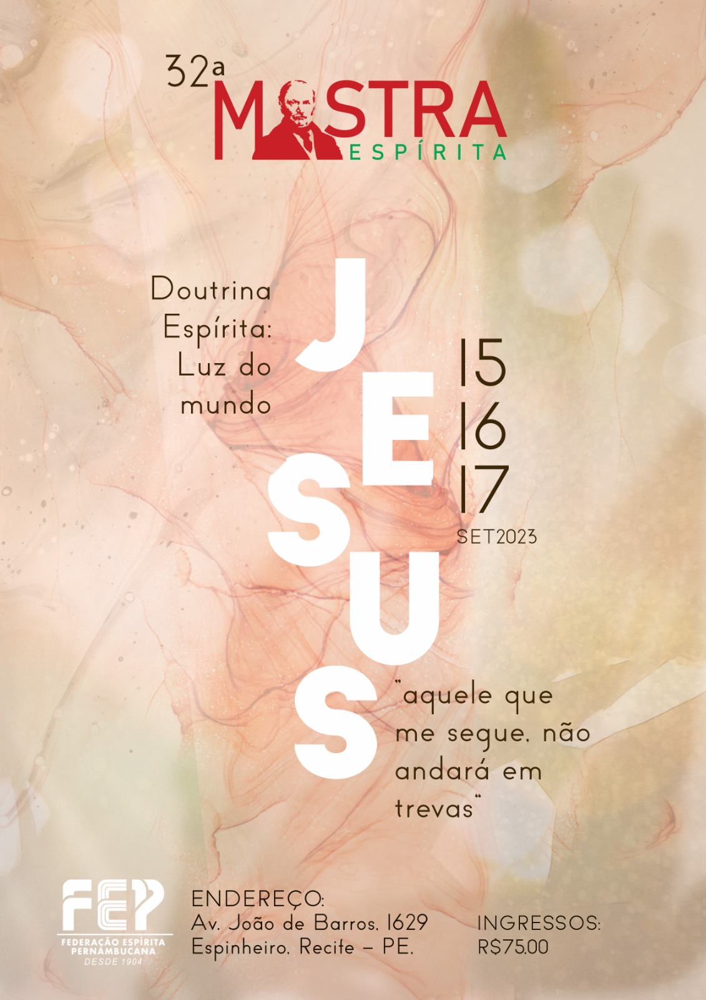

<section class="position-relative overflow-hidden" id="section-about">
    <div class="container py-9 py-lg-11 position-relative z-1">
        <div class="row align-items-center">
            <div class="col-lg-5 mb-6 mb-lg-0">
                <div data-aos="fade-right" data-aos-delay="200" class="aos-init aos-animate">
                    
                </div>
            </div>
            <div class="col-lg-6 ms-xl-auto">
                <h5 class="mb-4 text-info aos-init aos-animate" data-aos="fade-up">Sobre a Mostra</h5>
                <h2 class="display-5 text-capitalize mb-5 aos-init aos-animate" data-aos="fade-up">
                    Mostra Espírita <span class="text-primary">#32ª</span>
                </h2>
                <p class="mb-6 lead aos-init aos-animate" data-aos="fade-up">
                    A Mostra Espírita de Pernambuco é o principal evento organizado pela Federação Espírita Pernambucana (FEP). É, também,
                    um dos principais eventos espíritas do Nordeste. Realizado anualmente, sempre no terceiro final de semana do mês de
                    setembro, no Recife (PE), a Mostra tem como objetivo promover a divulgação e o estudo da Doutrina Espírita, além de
                    incentivar a integração e o diálogo entre os espíritas. Desta forma, visa contribuir para o fortalecimento da comunidade
                    espírita em Pernambuco e para a difusão dos valores e princípios espíritas na sociedade em geral.
                </p>
                <p class="mb-6 lead aos-init aos-animate" data-aos="fade-up">
                    Com a presença de renomados palestrantes e estudiosos do Espiritismo, a programação da Mostra inclui três dias de
                    palestras, seminários, oficinas, exposições e apresentações artísticas. Momentos que abordam os principais temas da
                    Doutrina, como reencarnação, mediunidade, evolução espiritual, entre outros. O evento é uma oportunidade singular para
                    aprofundar o conhecimento sobre a Doutrina e refletir sobre temas de interesse espiritual e humano. Além disso, a Mostra
                    também oferece espaço para a venda de livros e outros materiais relacionados ao Espiritismo, auxiliando na difusão do
                    conhecimento sobre a Doutrina.
                </p>
                <div class="mb-7 aos-init aos-animate" data-aos="fade-up">
                    <a
                        href="https://vimeo.com/353105087"
                        data-glightbox=""
                        data-gallery="gallery06"
                        class="btn btn-primary px-lg-5 py-lg-3"
                    >
                        <i class="bx bx-play fs-5 me-1 me-lg-2 align-middle"></i> Veja as edições anteriores
                    </a>
                </div>
                <span class="text-body-secondary d-block mb-4 aos-init aos-animate" data-aos="fade-up">Faltam apenas</span>

                <!--Countdown Start -->
                <div class="position-relative d-flex flex-wrap mb-7" data-countdown="2024/01/01">
                    <div class="width-10x height-10x d-flex flex-column flex-center rounded-circle bg-body-tertiary small me-3">
                        <h2 class="mb-0">{{ remainingTime.months }}</h2>
                        meses
                    </div>
                    <div class="width-10x height-10x d-flex flex-column flex-center rounded-circle bg-body-tertiary small me-3">
                        <h2 class="mb-0">{{ remainingTime.days }}</h2>
                        dias
                    </div>
                    <div class="width-10x height-10x d-flex flex-column flex-center rounded-circle bg-body-tertiary small me-3">
                        <h2 class="mb-0">{{ remainingTime.hours }}</h2>
                        horas
                    </div>
                    <div class="width-10x height-10x d-flex flex-column flex-center rounded-circle bg-body-tertiary small me-3">
                        <h2 class="mb-0">{{ remainingTime.minutes }}</h2>
                        minutos
                    </div>
                    <div class="width-10x height-10x d-flex flex-column flex-center rounded-circle bg-body-tertiary small me-3">
                        <h2 class="mb-0">{{ remainingTime.seconds }}</h2>
                        segundos
                    </div>
                </div>
                <!--/.Countdown End -->
            </div>
        </div>
    </div>
</section>
